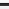

Sending Usage and Diagnostic Data to Cloudera
Cloudera Manager collects anonymous usage information and takes regularly-scheduled snapshots of the state of your cluster and automatically sends them anonymously to Cloudera. This helps Cloudera improve and optimize Cloudera Manager.
If you have a license, you can also trigger the collection of diagnostic data and send it to Cloudera Support to aid in resolving a problem you may be having.
Configuring a Proxy Server
To configure a proxy server through which usage and diagnostic data is uploaded, follow the instructions in cm_ag_network.html#xd_583c10bfdbd326ba--6eed2fb8-14349d04bee--76fa.
Managing Anonymous Usage Data Collection
Cloudera Manager sends anonymous usage information using Google Analytics to Cloudera. The information helps Cloudera improve Cloudera Manager. By default, anonymous usage data collection is enabled.
- Select .
- Under the Other category, set the Allow Usage Data Collection property.
Diagnostic Data Collection
To help with solving problems when using Cloudera Manager on your cluster, Cloudera Manager collects diagnostic data on a regular schedule, and automatically sends it to Cloudera. By default Cloudera Manager is configured to collect this data weekly and to send it automatically. Cloudera analyzes this data and uses it to improve the software. If Cloudera discovers a serious issue, Cloudera searches this diagnostic data and notifies customers with Cloudera Enterprise licenses who might encounter problems due to the issue. You can schedule the frequency of data collection on a daily, weekly, or monthly schedule, or disable the scheduled collection of data entirely. You can also send a collected data set manually.
Automatically sending diagnostic data requires the Cloudera Manager Server host to have Internet access, and be configured for sending data automatically. If your Cloudera Manager Server does not have Internet access, and you have a license, you can manually send the diagnostic data as described in Manually Triggering Collection and Transfer of Diagnostic Data to Cloudera.
Automatically sending diagnostic data might fail sometimes and return an error message of "Could not send data to Cloudera." To work around this issue, you can manually send the data to Cloudera Support.
What Data Does Cloudera Manager Collect?
- Up to 1000 Cloudera Manager audit events: Configuration changes, add/remove of users, roles, services, and so on.
- One day's worth of Cloudera Manager events: This includes critical errors Cloudera Manager watches for and more.
- Data about the cluster structure which includes a list of all hosts, roles, and services along with the configurations that are set through Cloudera Manager. Where passwords are set in Cloudera Manager, the passwords are not returned.
- Cloudera Manager license and version number.
- Current health information for hosts, service, and roles. Includes results of health tests run by Cloudera Manager.
- Heartbeat information from each host, service, and role. These include status and some information about memory, disk, and processor usage.
- The results of running Host Inspector.
- One day's worth of Cloudera Manager metrics. If you are using , host metrics are not included.
- A download of the debug pages for Cloudera Manager roles.
- For each host in the cluster, the result of running a number of system-level commands on that host.
- Logs from each role on the cluster, as well as the Cloudera Manager server and agent logs.
- Which parcels are activated for which clusters.
- Whether there's an active trial, and if so, metadata about the trial.
- Metadata about the Cloudera Manager Server, such as its JMX metrics, stack traces, and the database or host it's running with.
- HDFS or Hive replication schedules (including command history) for the deployment.
- Impala query logs.
- Cloudera Data Science Workbench collects aggregate usage data by sending limited tracking events to Google Analytics and Cloudera servers. No customer data or personal information is sent as part of these bundles.
Configuring the Frequency of Diagnostic Data Collection
By default, Cloudera Manager collects diagnostic data on a weekly basis. You can change the frequency to daily, weekly, monthly, or never. If you are a customer and you set the schedule to never, you can still collect and send data to Cloudera on demand. If you are a customer and you set the schedule to never, data is not collected or sent to Cloudera.
- Select .
- Under the Support category, click Scheduled Diagnostic Data Collection Frequency and select the frequency.
- To set the day and time of day that the collection will be performed, click Scheduled Diagnostic Data Collection Time and specify the date and time in the pop-up control.
You can see the current setting of the data collection frequency by viewing in the main navigation bar.
Specifying the Diagnostic Data Directory
You can configure the directory where collected data is stored.
- Select .
- Under the Support category, set the Diagnostic Data Bundle Directory to a directory on the host running Cloudera Manager Server. The directory must exist and be enabled for writing by the user
cloudera-scm. If this field is left blank, the data is stored in/tmp.
Redaction of Sensitive Information from Diagnostic Bundles
By default, Cloudera Manager redacts known sensitive information from inclusion in diagnostic bundles. Cloudera Manager uses a set of standard rules to redact passwords and secrets. You can add additional redaction rules using regular expressions to specify data you want to be redacted from the bundles.
- Go to
and search for the Redaction Parameters for Diagnostic
Bundles parameter.
The edit screen for the property displays.
- To add a new rule, click the
 icon. You can add one of the
following:
icon. You can add one of the
following:- Credit Card numbers (with separator)
- Social Security Card numbers (with separator)
- Email addresses
- Custom rule (You must supply values for the Search and Replace fields, and optionally, the Trigger field.)
- To modify a new rule, click the
 icon.
icon. - Edit the redaction rules as needed. Each rule has a description field where you can enter free text describing the rule and you can modify the following three fields:
- To delete a redaction rule, click the  icon.
- Click Save Changes.
Collecting and Sending Diagnostic Data to Cloudera
Disabling the Automatic Sending of Diagnostic Data from a Manually Triggered Collection
If you do not want data automatically sent to Cloudera after manually triggering data collection, you can disable this feature. The data you collect will be saved and can be downloaded for sending to Cloudera Support at a later time.
- Select .
- Under the Support category, uncheck the box for Send Diagnostic Data to Cloudera Automatically.
Manually Triggering Collection and Transfer of Diagnostic Data to Cloudera
To troubleshoot specific problems, or to re-send an automatic bundle that failed to send, you can manually send diagnostic data to Cloudera:
- Optionally, change the System Identifier property:
- Select .
- Under the Other category, set the System Identifier property and click Save Changes.
- Under the Support menu at the top right of the navigation bar, choose Send Diagnostic Data. The Send Diagnostic Data form displays.
- Fill in or change the information here as appropriate:
- Optionally, you can improve performance by reducing the size of the data bundle that is sent. Click Restrict log and metrics collection to expand this section of the form. The three filters, Host, Service, and Role Type, allow you to restrict the data that will be sent. Cloudera Manager will only collect logs and metrics for roles that match all three filters.
- Select one of the following under Data Selection:
- Select By Target Size to manually set the maximum size of the bundle. Cloudera Manager populates the End Time based on the setting of the Time Range selector. You should change this to be a few minutes after you observed the problem or condition that you are trying to capture. The time range is based on the timezone of the host where Cloudera Manager Server is running.
- Select By Date Range to manually set the Start Time and End Time to collect the diagnostic data. Click the Estimate button to calculate the size of the bundle based on the start and end times. If the bundle is too large, narrow the selection using the start and end times or by selecting additional filters.
- If you have a support ticket open with Cloudera Support, include the support ticket number in the field provided.
- Depending on whether you have disabled automatic sending of data, do one of the
following:
- Click Collect and Upload Diagnostic Data to Cloudera Support. A Running Commands window shows you the progress of the data collection steps. When these steps are complete, the collected data is sent to Cloudera.
- Click Collect Diagnostic Data only. A Command Details window shows you
the progress of the data collection steps.
- In the Command Details window, click Download Result Data to download and save a zip file of the information.
- Send the data to Cloudera Support by doing one of the following:
- Send the bundle using a Python script:
- Download the phone_home script.
- Copy the script and the downloaded data file to a host that has Internet access.
- Run the following command on that
host:
python phone_home.py --file downloaded data file
- Attach the bundle to the SFDC case. Do not rename the bundle as this can cause a delay in processing the bundle.
- Contact Cloudera Support and arrange to send the data file.
- Send the bundle using a Python script: